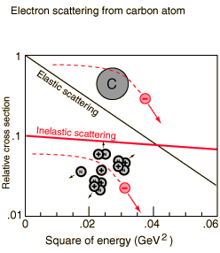
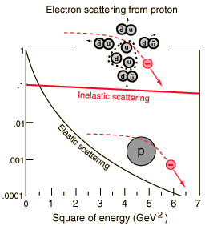

Structure Evidence from Deep Inelastic Scattering
|

|  |
| In the energy range up to 0.06 GeV, the cross section for elastic scattering of electrons from carbon nuclei drops dramatically since it becomes more and more improbable for the carbon nucleus to remain intact under such energetic bombardment. The cross section for inelastic scattering in which the carbon nucleus breaks apart remains surprisingly near a constant value. This suggests that the electron is scattering off something within the nucleus which is structureless in this energy range. That scattering center is known to be a proton, and this scattering evidence for the existence of the proton forms a model for looking for even deeper structure.
|
When the square of the electron energy is increased by a factor of about a hundred, then even the proton begins to show evidence of structure. The elastic scattering cross section drops precipitously while the overall scattering cross section of events which produce other particles (mostly mesons) remains almost constant. This suggests that the electron is scattering off of something within the proton which is structureless at these energies. The smaller scattering centers within the proton came to be called quarks. This kind of scattering result is one of the steps which led to the current picture of the proton as being composed of two "up" quarks and a "down" quark.
|
From early experiments in which electrons were scattered off nuclei, it could be implied that the scattering was from some charged particle within the nucleus which remained intact while the nucleus itself broke into pieces. This could in that case be verified directly by knocking out a proton and measuring its properties. The same kind of evidence in the high energy scattering of electrons off protons can be similarly interpreted: there is a smaller charged particle inside which remains intact even as the proton breaks apart. The direct verification of the existence of such a particle (a quark) is not so simple, since the nature of quark confinement is such that we cannot isolate a quark for analysis.
The illustration and comments follow the excellent discussion by Chris Quigg in a conference proceeding called "Quarks, Quasars, and Quandries". See reference.
|
Index
Rutherford concepts
Scattering concepts
Reference
Quigg |